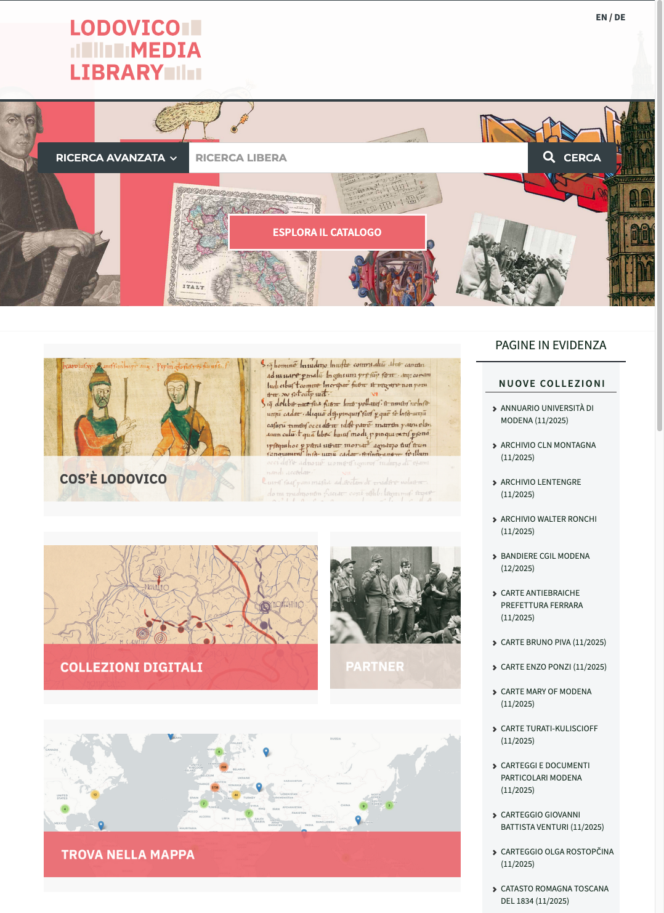
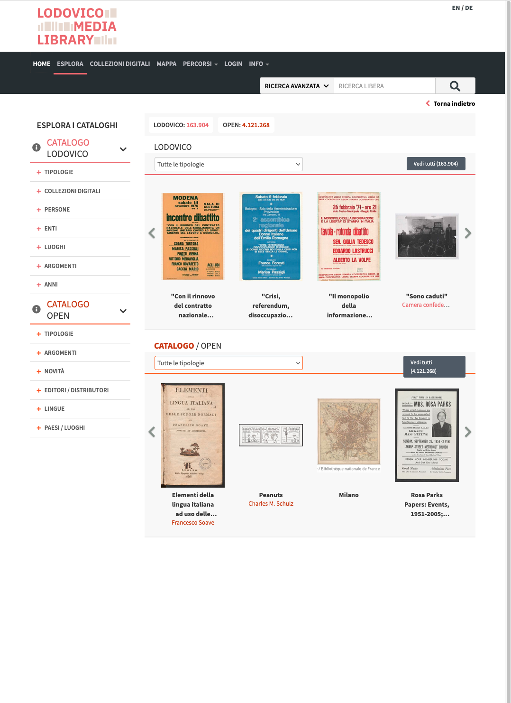
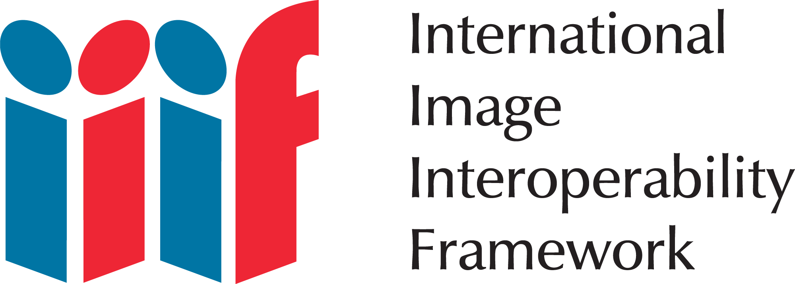
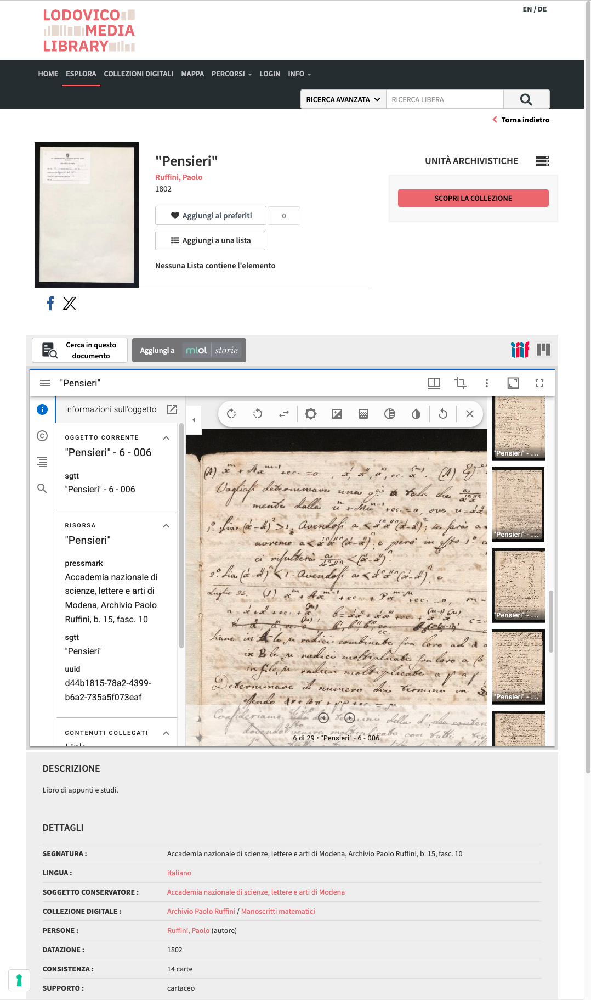
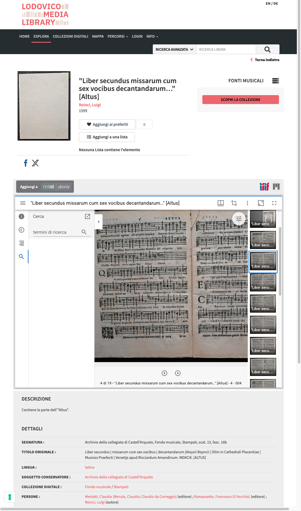
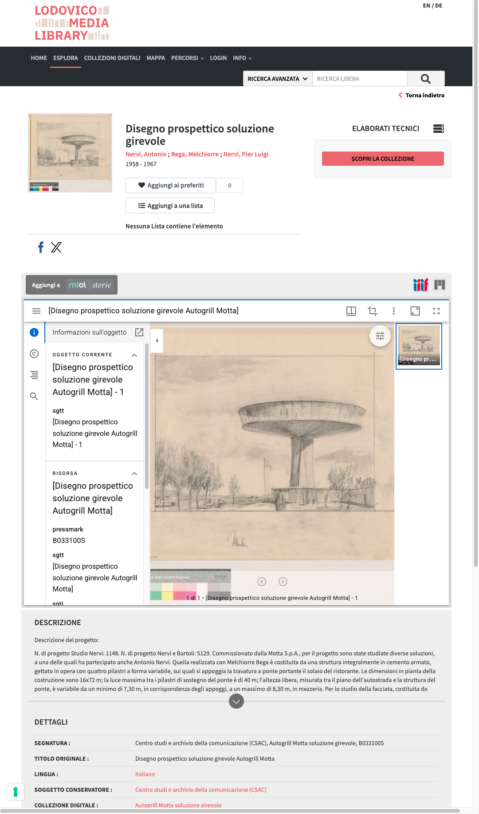
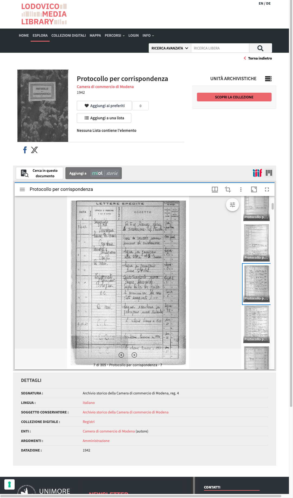
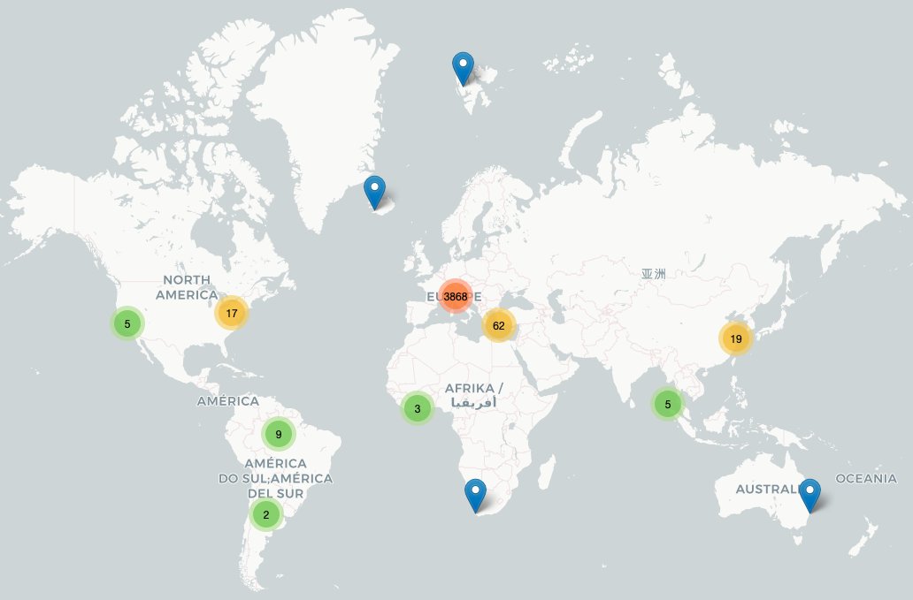

Una pergamena modenese, un manoscritto vaticano, una stampa parigina: digitalizzati su cinque piattaforme diverse, con cinque visualizzatori, cinque metadati, cinque licenze.
Sviluppata dal Centro Interdipartimentale di Ricerca sulle Digital Humanities (DHMoRe) dell'Università di Modena e Reggio Emilia, in collaborazione con le Università di Bologna e Parma. Afferisce al sistema MLOL.
Gli utenti non solo guardano: zoomano, annotano, ritagliano, confrontano e creano percorsi personalizzati di ricerca e didattica.
Accesso libero e gratuito al patrimonio digitalizzato. Le collezioni dialogano con quelle Open di tutto il mondo.
Un'unica piattaforma multi-tenant ospita istituti diversi mantenendoli distinti ma comunicanti tra loro.
Ogni istituto ha il proprio "spazio" digitale, con interfaccia personalizzabile. Dati separati informaticamente, ma interoperabili: gli utenti accedono con un solo account a tutto il patrimonio aggregato.
La più grande raccolta di prestito digitale per le biblioteche italiane.


Pergamene, registri, carteggi, processi inquisitoriali, archivi privati e bancari.
Manoscritti, incunaboli, edizioni antiche, fondi musicali, autografi.
Patrimonio storico-artistico, fotografie, manifesti, raccolte tematiche.
Progetti di ricerca curati direttamente dal DHMoRe, spesso con valore scientifico.
Interviste e testimonianze orali su nastro magnetico digitalizzato.
La storia recente attraverso archivi politici, sindacali, sociali.
International Image Interoperability Framework — un insieme di standard aperti per consegnare, visualizzare e annotare immagini digitali ad altissima qualità su scala globale.
Nato nel 2011 da una collaborazione tra Stanford, British Library, Bodleian, Bibliothèque Nationale de France, Vaticana e altri grandi attori, IIIF è oggi lo standard de facto per il patrimonio culturale digitalizzato.

IIIF è un set di specifiche modulari. Ogni API risolve un problema preciso, e le implementazioni possono adottarne una, due, tre o tutte e quattro.
Definisce un servizio web per richiedere ritagli, scalature, rotazioni e formati di un'immagine via URL standard. È la base: chiedi l'URL, ottieni i pixel.
Descrive un oggetto digitale composto: il manifesto. Pagine, ordine, metadati, annotazioni, audio, video — tutto in un JSON-LD strutturato.
Permette di cercare nel testo OCR delle pagine e tornare risultati con coordinate precise sui pixel — il viewer evidenzia direttamente.
Gestisce contenuti riservati, permette diversi livelli di autenticazione, dall'anteprima libera all'accesso totale autenticato (es. SPID, Shibboleth, OAuth).
/full/800,/0/default.jpg
/100,200,400,400/full/0/default.jpg
/full/full/90/bitonal.png
→ Il deep zoom dei manoscritti su Lodovico funziona richiedendo "tessere" (tile) successive a questo stesso URL: ogni livello di zoom è una nuova chiamata. Senza scaricare l'intero file ad alta risoluzione.
È il "passaporto" dell'oggetto: lo prende in carico qualsiasi viewer compatibile (Mirador, Universal Viewer, Clover…) e lo visualizza correttamente, in qualsiasi sito al mondo.
→ Un manifesto di Modena può essere aperto in un viewer ospitato a Parigi che mostra immagini servite da New York. È il senso stesso della parola interoperability.
{ "@context": "http://iiif.io/api/presentation/3/context.json", "id": "https://lodovico.medialibrary.it/.../manifest.json", "type": "Manifest", "label": { "it": ["Lettere di Lucrezia Borgia"] }, "metadata": [ { "label": {"it":["Data"]}, "value": {"it":["1502"]} }, { "label": {"it":["Segnatura"]}, "value": {"it":["ASMo, Casa, b.131"]} } ], "rights": "https://creativecommons.org/licenses/by/4.0/", "thumbnail": [ { "id": "…/thumb.jpg", "type": "Image" } ], "items": [ // le pagine (canvas) { "id": "…/canvas/p1", "type": "Canvas", "height": 4080, "width": 2720, "items": [{ "type": "AnnotationPage", "items": [{ "type": "Annotation", "motivation": "painting", "body": { "id": "…/full/full/0/default.jpg", "type": "Image", "service": [{ "id":"…/iiif/img", "type":"ImageService3"}] }, "target": "…/canvas/p1" }] }] }, // … altre N canvas (pagine) ] }
Una volta esposto un manifesto, qualsiasi viewer IIIF può consumarlo. Ecco i più diffusi — ognuno con un focus diverso, tutti gratuiti, tutti open source.
Lo strumento "da ricerca": apri due, tre, quattro manifesti fianco a fianco e confronta. Sviluppato da Stanford, Harvard, Cambridge. Annotazioni avanzate con plug-in.
Più "consumer-friendly": pulsanti chiari, modalità libro, metadati ben visibili. Adottato da British Library, Wellcome, V&A. Ideale per cataloghi pubblici.
Specializzato in audio e video IIIF. Trascrizioni sincronizzate, indicizzazione temporale. Indispensabile per archivi audiovisivi (vedi: Interviste ai partigiani).
Per chi sviluppa interfacce custom. OpenSeadragon resta la base per il deep-zoom. Sono tutti compatibili con lo stesso manifesto JSON-LD.
→ Lodovico utilizza i suoi viewer integrati basati su questi stessi standard.
Avvicinati a un singolo carattere, a una pennellata, a un dettaglio della rilegatura.
Non scarichi mai un'immagine "intera": solo le tessere che ti servono.
→ Caricamento istantaneo anche su immagini da 500 megapixel.
Aggiungi note testuali a coordinate precise sul canvas. Le note pubbliche restano visibili agli altri studiosi; quelle private sono legate al tuo account.
→ Una stratificazione collaborativa di sapere.
Estrai una porzione di un manoscritto, un capolettera, una firma: IIIF te lo serve come immagine indipendente con il proprio URL stabile.
→
Costruisci raccolte tematiche di "frammenti" per ricerca o didattica.
Apri lo stesso documento in due copie, due manoscritti diversi, una pagina e la sua trascrizione.
→
Funziona anche tra collezioni di istituti diversi, purché entrambi parlino IIIF.
Crea una sequenza di canvas selezionati, con narrazione testuale e annotazioni.
→
Nasce uno "story-tour" del documento, esportabile e citabile in articoli scientifici.
Per le collezioni dotate di trascrizione OCR, la Content Search API permette di cercare
una parola e vederla evidenziata direttamente sui pixel della pagina.
→
Migliora l'accessibilità dei documenti.




→ Una pagina, un'annotazione, un confronto. Tutto attraverso un singolo manifesto.
Lodovico collega i patrimoni dei suoi tenant e li fa dialogare con quelli degli istituti culturali di tutto il mondo che aderiscono alla modalità Open.

Copia un URL di manifesto, incollalo in un viewer compatibile: funziona.
Università, biblioteche nazionali, musei, archivi statali e fondazioni private in tutto il mondo.
Dall'Australia al Cile, dalla Norvegia al Giappone. Comunità attive in inglese, francese, tedesco, italiano, giapponese.
Stime al di sopra del miliardo di immagini servite via IIIF, con crescita esponenziale annuale.
Specifiche pubblicate sotto licenza CC-BY. Riunioni e working group aperti a chiunque voglia contribuire.
Maria sta editando un canzoniere del Trecento. I tre manoscritti che le servono sono a Modena, Ferrara e Oxford. Apre i tre manifesti in Mirador, allinea le pagine, annota varianti. Tutto dal suo studio, senza chiedere foto in alta risoluzione.
Luca insegna paleografia. Crea una "presentazione" IIIF con 12 canvas selezionati da fondi diversi, ognuno annotato con osservazioni paleografiche e link bibliografici. La condivide con gli studenti come un singolo URL.
Anna trova nelle "Fotografie della Liberazione di Modena" un'immagine in cui riconosce sua nonna ventenne. Zooma, la salva, aggiunge una nota pubblica con la sua identificazione. Domani uno storico la userà per arricchire i metadati.
Giovanni vuole identificare automaticamente miniature simili in fondi diversi. I manifesti IIIF forniscono URL stabili a immagini di qualità — perfette per addestrare modelli di computer vision e collegare opere disperse.
Lodovico è un luogo in cui depositare e condividere al pubblico in modalità libera e gratuita il patrimonio culturale digitalizzato".
Le risorse ad accesso libero sono raggiungibili senza login né barriere, purché la licenza dell'istituto lo permetta. La mappa "Le risorse ad accesso libero" funziona da entry point.
Nessun pay-per-view. Il modello economico è sostenuto da DHMoRe, dagli istituti aderenti e dal sistema MLOL. Per i tenant universitari, il login federato (SPID / Shibboleth) è gratuito.
Grazie allo standard IIIF, ai metadati interoperabili, ai manifesti pubblici, il patrimonio non è "intrappolato" dentro Lodovico: è esposto al mondo perché altri lo possano usare, citare, riusare.
Lodovico è un progetto vivo, in continua espansione. Ogni mese nuove collezioni si aggiungono; ogni adesione amplia la rete. Provatelo, esploratelo, criticatelo.
lodovico.medialibrary.itiiif.io — specificheiiif.io/api/cookbook — esempigithub.com/IIIF/awesome-iiifCentro Interdipartimentale
Digital Humanities
Largo Sant'Eufemia 19
41121 Modena
lodovico@unimore.it